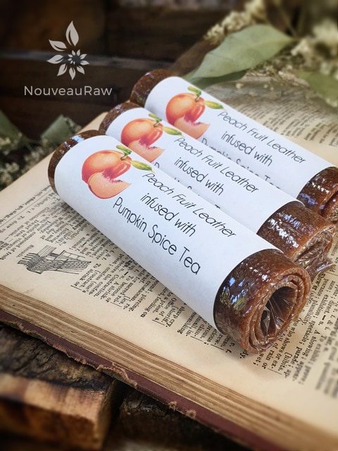

Peach Fruit Leather infused with Pumpkin Spice Tea

~ raw, vegan, gluten-free, nut-free ~
Even though we are sitting in the month of August and the summer temps seem to be at their all-time high, I can’t help but feel that Fall is just around the corner. And when I think of Fall, I think of beautiful shades of Autumn that blanket the trees, warm crackling fires in the fireplace, snuggling and sipping Pumpkin Spice Tea.
Ah, I do love that time of year, and I so look forward to it. Peaches are also a fruit that minds remind me of Fall. I suppose because they are a fruit that ends the summer months and ushers in the new cooling seasons.
So, why not pair the two…? The sweetness of the ripe peaches and the savory flavors of the Pumpkin Spice Tea is a perfect combination. I hope you enjoy this recipe. Blessings, amie sue
Ingredients:
yields 4 cups
- 6 cups chopped, organic peaches
- 2 Tbsp chia seeds, ground in spice grinder
- 2 Tbsp maple syrup
- 1 bag of pumpkin spice tea
- 1/2 tsp liquid stevia
Preparation:
- Select RIPE or slightly overripe peaches that have reached a peak in color, texture, and flavor.
- Prepare the peaches; wash, dry, remove stems, and stones.
- Puree the fruit, ground chia, and pumpkin spice tea (pour the actual contents of the tea bag into the puree mix) maple syrup and stevia, in the blender or food processor until smooth.
- Taste and sweeten if more is needed. Keep in mind that flavors will intensify as they dehydrate.
- When adding a sweetener do a little at a time, and reblend, tasting until it is at the desired taste.
- It is best to use a liquid type sweetener. Don’t use a granulated sugar because it tends to change the texture of the finished fruit leather.

Allow the puree to sit for 10 minutes, so the chia has time to thicken the puree.- Spread the fruit puree on teflex sheets that come with your dehydrator. Pour the puree to create an even depth of 1/8 to 1/4 inch. If you don’t have teflex sheets for the trays, you can line your trays with plastic wrap or parchment paper. Do not use wax paper or aluminum foil.
- Lightly coat the food dehydrator plastic sheets or wrap with a cooking spray, I use coconut oil that comes in a spray.
- When spreading the puree on the liner, allow about an inch of space between the mixture and the outside edge. The fruit leather mixture will spread out as it dries, so it needs a little room to allow for this expansion.
- Be sure to spread the puree evenly on your drying tray. When spreading the puree mixture, try tilting and shaking the tray to help it distribute more evenly. Also, it is a good idea to rotate your trays throughout the drying period. This will help assure that the leathers dry evenly.
- Dehydrate the fruit leather at 145 degrees (F) for 1 hour, reduce temp to 105 degrees (F) and continue drying for about 16 (+/-) hours. The finished consistency should be pliable and easy to roll.
- Check for dark spots on top of the fruit leather. If dark spots can be seen it is a sign that the fruit leather is not completely dry.
- Press down on the fruit leather with a finger. If no indentation is visible or if the fruit leather is no longer tacky to the touch, the fruit leather is dry and can be removed from the dehydrator.
- Peel the leather from the dehydrator trays or parchment paper. If the fruit leather peels away easily and holds its shape after peeling, it is dry. If the fruit leather is still sticking or loses its shape after peeling, it needs further drying.
- Under-dried fruit leather will not keep; it will mold. Over-dried fruit leather will become hard and crack, although it will still be edible and will keep for a long time
- Storage: To store the finished fruit leather…
- Allow the leather to cool before wrapping up to avoid moisture from forming, thus giving it a breeding ground for molds.
- Roll them up and wrap them tightly with plastic wrap. Click (here) to see photos of how I wrap them.
- Place in an air-tight container, and store in a dry, dark place. (Light will cause the fruit leather to discolor.)
- The fruit leather will keep at room temperature for one month, or in a freezer for up to one year.
Culinary Explanations:
- Why do I start the dehydrator at 145 degrees (F)? Click (here) to learn the reason behind this.
- When working with fresh ingredients, it is important to taste test as you build a recipe. Learn why (here).
- Don’t own a dehydrator? Learn how to use your oven (here). I do however truly believe that it is a worthwhile investment. Click (here) to learn what I use.
© AmieSue.com